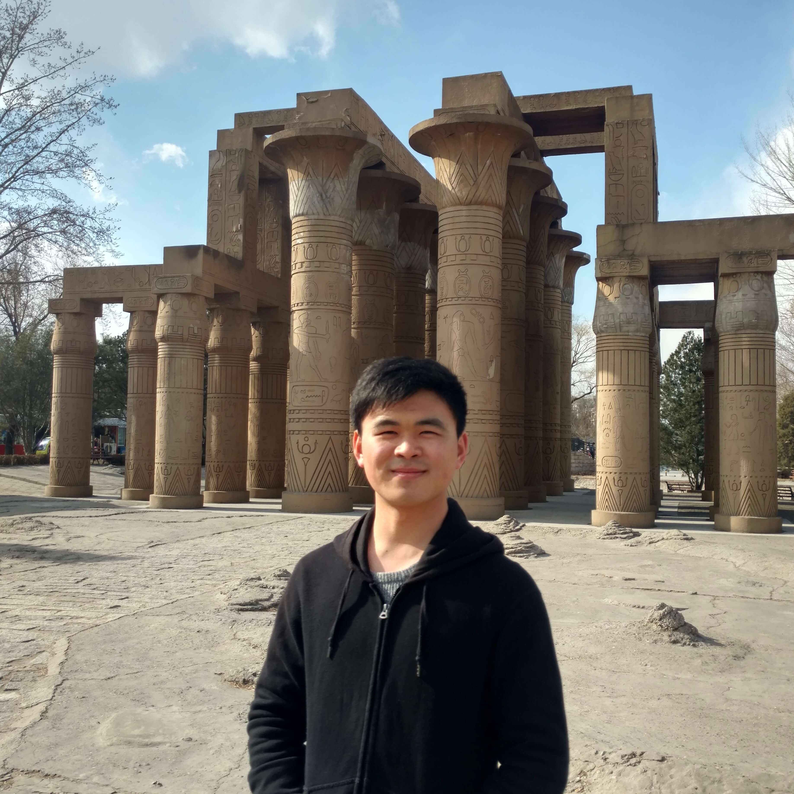

Wenbo Wang
Wenbo Wang is a Ph.D. student in the Department of Informatics, College of Computing, New Jersey Institute of Technology. His research interests include Natural Language Processing, Machine Learning, Vulnerability Detection, etc. He has some publications on TGIS.
Publications
-
2021 - Reconstructing spatial information diffusion networks with heterogeneous agents and text contents.
-
2021 - Zhang, X., Zhang, Z. K., Wang, W., Hou, D., Xu, J., Ye, X., & Li, S. (2021). Multiplex network reconstruction for the coupled spatial diffusion of infodemic and pandemic of COVID-19. International Journal of Digital Earth, 14(4), 401-423.
-
2021 - Wang, W., Li, Y., Wang, S., & Ye, X. (2021). QA4GIS: A novel approach learning to answer GIS developer questions with API documentation. Transactions in GIS, 00, 1– 26.
Social Links